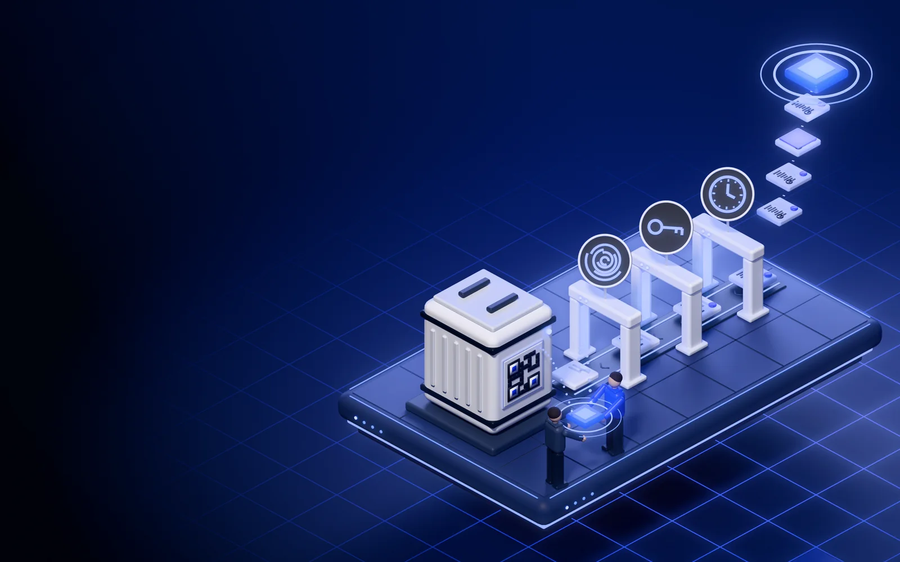
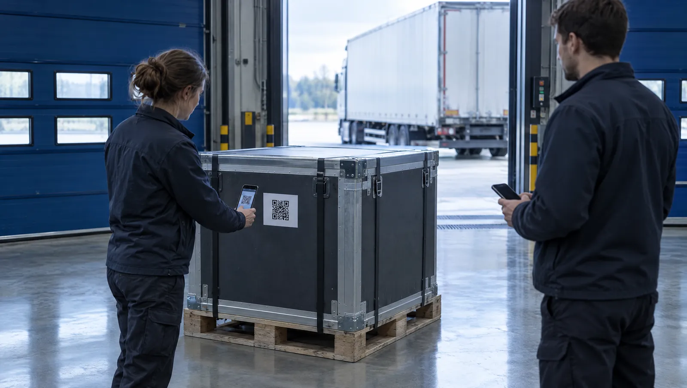
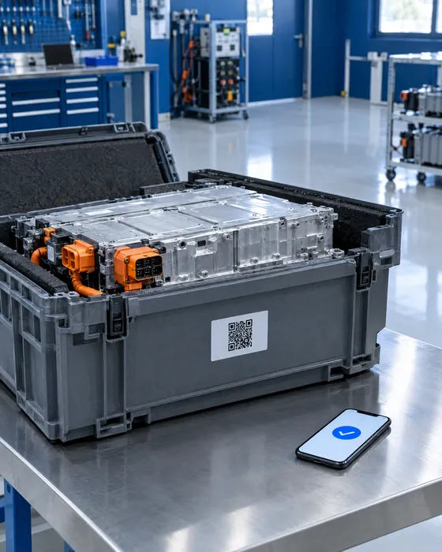
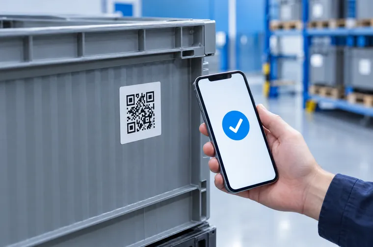

A passport is a data sheet
It describes the product: model, composition, origin. It does not say in what condition this one item left on a given day.
Vidimus/Products/Product Passport
LiveVidimus Product Passport
A battery, a machine, a container: every object with a serial number changes hands often. At every handover, Vidimus records the condition in which it left, signed by both parties and open for anyone to check through the QR on the object.
Vidimus does not issue an official EU product passport itself. It records the line of an object: a code with a QR label, events, and handovers signed by both holders.
Ten objects a year are free. Receiving and checking are always free.

A used EV module, shipped to a reuse company. Test report on departure: state of health 84%. On arrival: "We measure 71%. Your report was changed after shipping." The difference is worth €2,600. Your proof: a PDF you can make and change yourself.

It describes the product: model, composition, origin. It does not say in what condition this one item left on a given day.
A test report or handover report comes from your system. The buyer has to take your word for it.
Seller, carrier and buyer work in different systems. In a dispute, two versions stand against each other.
With the app: the serial number, photos and the test report with the tester's name, the type of test, the result and the date. Vidimus gives everything a fingerprint and a signature, and anchors it within a few minutes.
Whoever hands over and whoever receives sign the condition together, each on their own phone. The recipient does not need a subscription. If they sign without an eID mandate from their company, it says mandate not verified.
Anyone scans the QR and sees the line of handovers: which organisation (or that it hides its name), when and in what condition. Without an account. With the evidence bundle, which the holder can share with you, even entirely without Vidimus.


Anyone who ships a used battery that is not waste needs a test report per battery: the tester, the type of test, the result and the date, attached to the battery or the packaging. This has applied since 18 August 2025.
EV batteries, batteries for light means of transport (e-bikes, e-scooters) and industrial batteries above 2 kWh that are placed on the market from 18 February 2027 get a battery passport. The manufacturer makes it, usually with a passport platform.
Other product groups will follow, around 2028–2029 at the earliest. Until then, it is about your own benefit: fewer disputes at handover, and a condition that a buyer or insurer can check.
General information, not legal advice. Vidimus does not replace a passport platform and does not take care of your legal obligations for you. The tester makes the report itself; Vidimus makes it recomputable. It is best to have it checked whether an anchored report with a QR is enough for Annex XIV.
Vidimus does not make a battery passport (Art. 77); the manufacturer does that with a passport platform.
| New objects per year | Per object, one-off |
|---|---|
| 1 – 10 | free |
| 11 – 1,000 | €2.00 |
| 1,001 – 10,000 | €1.00 |
| 10,001 – 100,000 | €0.40 |
| above 100,000 | €0.15 |
| above 1 million | on quote |
No. It shows who handed over and accepted the object at what moment, and in what condition. Who owns it is governed by your contract.
No. Your platform remains the passport. Underneath it, Vidimus records what happened at each handover, through the API or with the app alongside.
No. Receiving and checking are free. Signing works on any recent phone.
Yes. A logger in the crate or on the object becomes a measurement source: each measurement gets a fingerprint and is anchored. In a dispute about damage, you put the measurements next to the handover. Then everyone sees when the shock happened, and whether that was before or after the handover.
A copy shows the same line of handovers. Only the party that has the object now, according to that line, can sign a new handover. So always check the serial number on the object itself; the page shows it.
You create your account in two minutes, without payment details. A director identifies your company once with the Belgian eID. Then you record your first object with the app. Do you work with batteries or equipment in larger numbers? Then we look together at how it fits into your system.